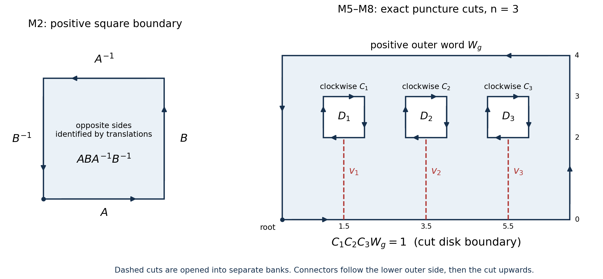

Group cohomology of \(\Gamma\) and the Eichler–Shimura isomorphism
Written by GPT-6.1 Sol (OpenAI) in Codex, Ultra setting, October 2026. Self-checked by the writing AI. Public domain (CC0).
A cusp form has periods along paths on a modular curve. In higher weight these periods take values in a polynomial space, and the modular transformation law controls how the values change when a path moves. We will prove that the holomorphic and antiholomorphic cusp forms together account for every parabolic cohomology class.
We use the quotient and cusp charts from Modular curves and their genus, the dimensions from Dimension formulas for congruence subgroups, and the positive Petersson pairing from The Petersson inner product and Poincaré series. The description by cocycles below suffices; higher derived functors are background rather than an ingredient in the proofs.
Throughout, \(\Gamma\subset\mathrm{SL}_2(\mathbb Z)\) has finite index, \(k\ge2\), and \(m=k-2\). Our isomorphism is proved under the hypothesis \[ k\text{ is even}\quad\text{or}\quad -I\in\Gamma. \tag{0.1} \] This includes the zero spaces in odd weight when \(-I\in\Gamma\). Odd weights for groups without \(-I\), with their irregular cusps, require additional conventions and are outside (0.1).
1. Coefficients, cocycles and cusp restrictions
For a field \(K\) of characteristic zero, put \[ V_m(K)=K[X,Y]_m,\qquad \rho(\gamma)P(X,Y)=P(dX-bY,-cX+aY), \quad \gamma=\begin{pmatrix}a&b\\c&d\end{pmatrix}. \tag{1.1} \] Here \(K[X,Y]_m\) consists of homogeneous polynomials of degree \(m\). With column vectors \(v\), this is \(P(\gamma^{-1}v)\); hence \(\rho(\gamma)\rho(\delta)=\rho(\gamma\delta)\). In particular it is a left action.
A one-cocycle is a map \(c:\Gamma\to V_m(K)\) satisfying \[ c(\gamma\delta)=c(\gamma)+\rho(\gamma)c(\delta). \tag{1.2} \] A coboundary has the form \(c(\gamma)=(\rho(\gamma)-1)v\). Their quotient is \(H^1(\Gamma,V_m(K))\). The cocycle identity gives \(c(1)=0\) and \(c(\gamma^{-1})=-\rho(\gamma^{-1})c(\gamma)\).
If \(P\in\mathbb P^1(\mathbb Q)\), let \(\Gamma_P\) be its stabilizer. Define [ H^1_{\mathrm{par}}(\Gamma,V_m(K))
\ker\left( H^1(\Gamma,V_m(K)) \longrightarrow \prod_{P\in\Gamma\backslash\mathbb P^1(\mathbb Q)} H^1(\Gamma_P,V_m(K)) \right). \tag{1.3} ] Thus parabolicity means that at each cusp there is a possibly different vector \(v_P\) with \(c(\gamma)=(\rho(\gamma)-1)v_P\) for \(\gamma\in\Gamma_P\).
Lemma 1.1. For an infinite cyclic group generated by \(A\), evaluation at \(A\) identifies \[ H^1(\langle A\rangle,V)=V/(A-1)V. \tag{1.4} \] For a finite cyclic group of order \(r\), over characteristic zero, every one-cocycle is a coboundary.
Proof. An arbitrary value \(u=c(A)\) extends uniquely by \(c(A^n)=\sum_{j=0}^{n-1}A^ju\) for \(n>0\), with negative values given by the inverse identity. Coboundaries evaluate to \((A-1)V\), proving (1.4).
In the finite case the necessary and sufficient condition is \(N_Au=0\), where \(N_A=1+A+\cdots+A^{r-1}\). The operator \(E=N_A/r\) projects onto the invariants. Direct multiplication gives \[ (A-1)\frac1r\sum_{j=0}^{r-1}jA^j=1-E. \] Consequently \(\ker N_A=(A-1)V\), as required. \(\square\)
We shall also need a coefficient pairing. Write \(e_r=X^{m-r}Y^r\), and define \[ B(e_r,e_s)= \begin{cases} (-1)^r\binom mr^{-1},&r+s=m,\\ 0,&r+s\ne m. \end{cases} \tag{1.5} \] This is nondegenerate, since its matrix has nonzero antidiagonal entries. Expansion by the binomial theorem gives \[ B\bigl((aX+bY)^m,(cX+dY)^m\bigr)=(ad-bc)^m. \tag{1.6} \] The determinant on the right is unchanged by the substitutions in (1.1). Pure powers span \(V_m\): use \((X-tY)^m\) at \(m+1\) distinct values of \(t\) and the nonsingular Vandermonde matrix. Thus (1.6) proves that \(B\) is \(\Gamma\)-invariant. It identifies \(V_m\) with its dual as a module. In particular, \[ B\bigl((X-zY)^m,(X-wY)^m\bigr)=(z-w)^m. \tag{1.7} \]
The central sign
Since \(\rho(-I)=(-1)^m\), even weights descend to the projective group \(\bar\Gamma\). If \(-I\in\Gamma\) in even weight, a cocycle has \(c(-I)=0\), by the order-two relation, so every cocycle factors through \(\bar\Gamma\). If \(-I\notin\Gamma\), the projection \(\Gamma\to\bar\Gamma\) is an isomorphism. The cusp restrictions factor in the same way.
If \(k\) is odd and \(Z=-I\in\Gamma\), modularity gives \(f=-f\), so \(S_k(\Gamma)=0\). Comparing \(c(Z\gamma)\) with \(c(\gamma Z)\) gives \[ c(Z)-c(\gamma)=c(\gamma)+\rho(\gamma)c(Z). \] Therefore \[ c(\gamma)=(\rho(\gamma)-1)\bigl(-c(Z)/2\bigr). \tag{1.8} \] Both full and parabolic cohomology are zero. From now until the final theorem we may work in even weight on \(\bar\Gamma\).
2. Mayer–Vietoris without a resolution
Set \[ S=\begin{pmatrix}0&-1\\1&0\end{pmatrix}, \qquad T=\begin{pmatrix}1&1\\0&1\end{pmatrix}, \qquad U=ST. \] Their projective orders are \(2,\infty,3\), respectively.
Lemma 2.1. \(\mathrm{PSL}_2(\mathbb Z)=\langle S\rangle*\langle U\rangle\).
Proof. The generation by \(S,T\) was proved in the first lesson, so \(S,U\) generate as well. We check that there are no additional relations.
On the real line let \(A=(0,\infty)\), \(D=(-\infty,0)\). Then \[ S(D)=A,\qquad U(A)=(-1,0),\qquad U^2(A)=(-\infty,-1). \] A reduced word in the two finite cyclic factors can be conjugated either to a single nonidentity syllable or to an alternating word beginning with \(S\) and ending with \(U\) or \(U^2\). Indeed, cancel first and last syllables in the same factor by conjugating until the word is cyclically reduced, then cyclically rotate it. A single syllable is nonidentity. An alternating word maps \(A\) into \(A\), and its outermost pair \(SU\) or \(SU^2\) puts its entire image in \((1,\infty)\) or \((0,1)\). Its image is a proper subset of \(A\), so it cannot be the identity. This proves the free-product assertion. \(\square\)
Theorem 2.2 (Mayer–Vietoris in degree one). For any \(\mathbb Q[\mathrm{PSL}_2(\mathbb Z)]\)-module \(V\), there is an exact sequence \[ 0\longrightarrow V^G \longrightarrow V^S\oplus V^U \xrightarrow{(a,b)\mapsto a-b}V \longrightarrow H^1(G,V)\longrightarrow0, \quad G=\mathrm{PSL}_2(\mathbb Z). \tag{2.1} \] Consequently \(H^1(G,V)\simeq V/(V^S+V^U)\). If \(V\) is finite dimensional, \[ \dim H^1(G,V)=\dim V-\dim V^S-\dim V^U+\dim V^G. \tag{2.2} \]
Proof. Lemma 1.1 allows us to write the restriction of any cocycle as \[ c(S)=(S-1)a,\qquad c(U)=(U-1)b. \] Conversely these values extend to a unique cocycle on the free product. On a reduced word, use (1.2) to sum the successive syllable values with their preceding actions. Cancellation within either factor respects this rule because its restriction is already a cocycle there. Thus the construction is well defined.
Changing primitives adds an element of \(V^S\) to \(a\) and of \(V^U\) to \(b\). Adding a global coboundary adds the same vector to \(a,b\). Hence the class determines \(a-b\) modulo \(V^S+V^U\). Conversely, if \(a-b\in V^S+V^U\), alter the two primitives by invariant vectors so they become equal. The cocycle is then a global coboundary. Every difference is obtained by taking \(b=0\). This proves the quotient description and exactness. The kernel of the difference map is the diagonal copy of \(V^S\cap V^U=V^G\), giving the first arrow and (2.2). \(\square\)
3. The Eichler integrals
Write \(v_z=(X-zY)^m\). The determinant-one identity gives \[ \rho(\gamma)v_z=(cz+d)^m v_{\gamma z}. \tag{3.1} \] For \(f,g\in S_k(\Gamma)\), define coefficient-valued one-forms \[ \omega_f=f(z)v_z\,dz,\qquad \bar\omega_g=\overline{g(z)}v_{\bar z}\,d\bar z. \tag{3.2} \] The transformation law for \(f\), (3.1), and \(d(\gamma z)=(cz+d)^{-2}dz\) show \[ \gamma^*\omega_f=\rho(\gamma)\omega_f,\qquad \gamma^*\bar\omega_g=\rho(\gamma)\bar\omega_g. \tag{3.3} \] All coefficients of \(\omega_f\) are holomorphic and all those of \(\bar\omega_g\) are antiholomorphic, so these forms are closed. Their integrals in the simply connected half-plane depend only on endpoints.
For completeness, a closed coefficient one-form \(P\,dx+Q\,dy\) on the half-plane has the primitive \[ F(x,y)=\int_{x_0}^xP(t,y_0)\,dt+\int_{y_0}^yQ(x,t)\,dt. \] Closedness means \(\partial_yP=\partial_xQ\). Differentiating the two integrals gives \(\partial_yF=Q\) and \(\partial_xF=P(x,y_0)+\int_{y_0}^y\partial_yP(x,t)\,dt=P(x,y)\). Thus integrals along any piecewise smooth path are endpoint differences. This elementary construction also applies to the smooth closed forms used below.
Theorem 3.1. For \(z_0\in\mathfrak H\), \[ c_f(\gamma)=\int_{z_0}^{\gamma z_0}\omega_f,\qquad c_{\bar g}(\gamma)=\int_{z_0}^{\gamma z_0}\bar\omega_g \tag{3.4} \] are parabolic cocycles. Their classes are independent of \(z_0\).
Proof. Splitting the path at \(\gamma z_0\) and applying (3.3) to the second part yields \(c_f(\gamma\delta)=c_f(\gamma)+\rho(\gamma)c_f(\delta)\). The same computation works for the antiholomorphic form.
For a new point \(z_1\), let \(b=\int_{z_0}^{z_1}\omega_f\). Concatenating the paths \(z_1\to z_0\to\gamma z_0\to\gamma z_1\) gives \[ c_{f,z_1}(\gamma)-c_{f,z_0}(\gamma) =(\rho(\gamma)-1)b. \tag{3.5} \] Again this holds for the other form.
It remains to justify moving an endpoint to a cusp. Choose a scaling matrix \(\sigma\) with \(\sigma\infty=P\), and use \(w=x+iy\) in its high cusp strip. By the cusp expansion, \(f|_k\sigma(w)=O(e^{-ay})\), for some \(a>0\), uniformly over a width. Formula (3.3), with the slash transformation, reduces the coefficient estimates to a polynomial of degree at most \(m\) in \(w\) times this exponential. The integral along a vertical ray converges absolutely. Horizontal segments at height \(y\) have integrals tending to zero, so the cusp endpoint is well defined.
Put \(b_P=\int_{z_0}^{P}\omega_f\). If \(\gamma\in\Gamma_P\), concatenating through \(P=\gamma P\) gives \[ c_f(\gamma)=b_P-\rho(\gamma)b_P =(\rho(\gamma)-1)(-b_P). \tag{3.6} \] This is precisely the required cusp coboundary. Conjugation gives the corresponding convergence and identity for \(\bar\omega_g\). \(\square\)
The resulting complex-linear map is \[ \mathcal E: S_k(\Gamma)\oplus\overline{S_k(\Gamma)} \longrightarrow H^1_{\mathrm{par}}(\Gamma,V_m(\mathbb C)), \qquad (f,\bar g)\longmapsto[c_f+c_{\bar g}]. \tag{3.7} \] The second summand has the conjugate complex-vector-space structure, so conjugating a cusp form produces a complex-linear map from that summand.
4. The dimension of parabolic cohomology
We supply the dimension computation for groups with elliptic points as well. Let \(g\) be the genus of \(X(\Gamma)\), \(c\) its number of cusps, and \(e_2,e_3\) its numbers of elliptic points of the indicated orders. There is at least one cusp.
The following presentation is proved in Appendix A from the earlier handle models and quotient charts. Peripheral generators are clockwise in positive local coordinates, while the handle basis uses the positively oriented square: \[ \bar\Gamma= \left\langle A_i,B_i,E_j,P_t\ \middle|\ \prod_{i=1}^g[A_i,B_i]\prod_jE_j\prod_{t=1}^cP_t=1,\ E_j^{\nu_j}=1 \right\rangle, \quad \nu_j\in\{2,3\}. \tag{4.1} \] Here the \(P_t\) generate cusp stabilizers, up to conjugacy.
For clarity, its justification is as follows. Remove the cusps and elliptic points from \(X(\Gamma)\). Cutting a genus-\(g\) surface along its handle curves and paths to the removed points gives the boundary word in (4.1), with no finite-order relations yet. Appendix A.2–A.4 gives the exact ordered cuts, labelled peripheral loops and cap argument that prove this cell presentation. The action on the half-plane with all elliptic lifts removed is free, so path lifting maps this punctured-surface group onto \(\bar\Gamma\). Its kernel consists of loops in that covering space. Appendix A.5 puts each closed upstairs loop in a compact rectangle containing only finitely many removed lifts and applies the explicit puncture-cut proof there. Thus these loops are generated by conjugates of the small peripheral circles; no transversality of an arbitrary contraction is assumed. At an elliptic point the chart is \(w\mapsto w^{\nu_j}\); a small circle upstairs projects to \(\nu_j\) circuits downstairs. Thus the kernel imposes exactly \(E_j^{\nu_j}=1\). Cusps have no lifts in the half-plane and impose no further relation. This proves (4.1).
Proposition 4.1. Let \(V\) be a finite-dimensional self-dual characteristic-zero module for the group in (4.1). Put \[ d=\dim V,\quad h=\dim V^{\bar\Gamma},\quad a_j=\dim V^{E_j},\quad q_t=\dim V^{P_t}. \] Then \[ \dim H^1_{\mathrm{par}}(\bar\Gamma,V) =(2g+c+e_2+e_3-2)d-\sum_j a_j-\sum_t q_t+2h. \tag{4.2} \]
Proof. A cocycle is specified by its generator values. Its values on \(A_i,B_i\) are arbitrary. The relation \(E_j^{\nu_j}=1\) requires the elliptic value to lie in the kernel of its norm, which is \((E_j-1)V\) by Lemma 1.1. Parabolicity similarly requires the value on \(P_t\) to lie in \((P_t-1)V\). Before imposing the long relation, the parameter space therefore has dimension \[ 2gd+\sum_j(d-a_j)+\sum_t(d-q_t). \tag{4.3} \] The cocycle value on the long relation is a linear map \(L\) from this space to \(V\). Its vanishing is sufficient: a cocycle first exists on the free generators, and descends through a relator precisely when its value there is zero. The cocycle identity then also makes it zero on every conjugate of that relator and on the normal subgroup they generate.
We prove \(\operatorname{rank}L=d-h\). A covector \(\lambda\) annihilates \(L\) exactly when it annihilates the coefficient of every free parameter. Carry it through the prefixes of the relation by writing \(\lambda_Q=\lambda\rho(Q)\). For a commutator let \(A,B\) also denote their actions, \(C=ABA^{-1}\), \(K=ABA^{-1}B^{-1}\). Its contribution is \[ (1-C)c(A)+(A-K)c(B). \tag{4.4} \] Thus the covector entering that factor satisfies \(\lambda_QC=\lambda_Q\) and \(\lambda_QA=\lambda_QK\). Since \(K=CB^{-1}\), the latter gives \(\lambda_QA=\lambda_QB^{-1}\), hence \(\lambda_QAB=\lambda_Q\). Now \(\lambda_QC=\lambda_QABA^{-1}=\lambda_QA^{-1}\), so it also fixes \(A\), and then \(B\). It fixes \(K\), and leaves the entering covector unchanged.
For an elliptic or cusp generator \(D\), its allowed values fill \((D-1)V\). Annihilating those values says \(\lambda_QD=\lambda_Q\), so again the prefix leaves the covector unchanged. Proceeding through the relation shows that \(\lambda\) fixes every generator. Conversely, such an invariant covector annihilates every contribution. The annihilator of \(\operatorname{im}L\) is therefore \((V^*)^{\bar\Gamma}\), of dimension \(h\) by self-duality.
Subtract \(d-h\) from (4.3) to obtain the cocycle dimension. The coboundaries have dimension \(d-h\), since their kernel is \(V^{\bar\Gamma}\). Subtracting this once more proves (4.2). \(\square\)
Apply this to \(V_m(\mathbb C)\) in even weight. A cusp generator acts by a conjugate of an upper translation, so \(q_t=1\). Indeed, under our action an upper translation fixes exactly \(Y^m\): a polynomial in \(X/Y\) fixed by a nonzero translation must be constant. A finite-index subgroup contains a nonzero power of both the upper and lower translations, because its intersections with these infinite cyclic groups have finite index. The lower translation fixes exactly \(X^m\). Their intersection is zero for \(m>0\). Thus \(h=0\) for \(k\ge4\); in weight two, \(V_0=\mathbb C\) and \(h=1\).
An elliptic lift of order two has eigenvalues \(i,-i\) on the two-dimensional representation. An order-three projective lift has eigenvalues \(\zeta_6,\zeta_6^{-1}\), up to a central sign that does not affect even \(m\). The eigenvalues on \(V_m\) are respectively \(i^{m-2r}\) and \(\zeta_6^{m-2r}\), \(0\le r\le m\). Counting the exponents divisible by four or six gives \[ a_2=k-1-2\lfloor k/4\rfloor,\qquad a_3=k-1-2\lfloor k/3\rfloor. \tag{4.5} \] These counts can also be obtained by listing \(r\equiv(k/2-1)\) modulo two or three.
Substitution in (4.2), followed by the even-weight dimension formula of the sixth lesson, gives \[ \begin{aligned} \dim H^1_{\mathrm{par}}(\Gamma,V_{k-2}(\mathbb C)) &=2\left((k-1)(g-1)+(k/2-1)c +e_2\lfloor k/4\rfloor+e_3\lfloor k/3\rfloor\right)\\ &=2\dim S_k(\Gamma),\qquad k\ge4\text{ even}. \end{aligned} \tag{4.6} \] In weight two, (4.2) instead gives \(2g=2\dim S_2(\Gamma)\). This separate calculation is essential.
5. Cup pairing, Petersson product and the isomorphism
Let \(\mu=[\mathrm{PSL}_2(\mathbb Z):\bar\Gamma]\). Our Petersson product is \[ \langle f,g\rangle_\Gamma =\frac1\mu\int_{\bar\Gamma\backslash\mathfrak H} f(z)\overline{g(z)}y^{k-2}\,dx\,dy. \tag{5.1} \] The quotient has its complex orientation \(dx\wedge dy\).
We first define the geometric cup pairing on the period classes of the forms (3.2), allowing finite sums of those forms. The compact-support construction is part of the definition: the quotient is not compact before its cusps are added.
Lemma 5.1 (cutoffs and class dependence). A closed form \(\omega\) of this kind can be replaced by a closed covariant form \(\omega^c\) with compact support on the quotient, without changing its period class. For two such forms the number \[ \mathscr C([\omega],[\eta]) =\frac1\mu\int_{\bar\Gamma\backslash\mathfrak H} B(\omega^c\wedge\eta^c) \tag{5.2} \] is independent of the choices and depends only on their group-cohomology classes. It equals the integral with the original forms \(\omega,\eta\).
Proof. In each scaled cusp strip take the primitive \(F_P(z)=\int_P^z\omega\), with limiting value zero at the cusp. The estimates in Theorem 3.1 give \(F_P=O((1+y)^m e^{-ay})\) in that coefficient frame. The primitive is covariant under the cusp stabilizer: both its endpoints transform, and its constant at the cusp is zero. Choose a smooth height cutoff \(\psi_P\), zero below one high horocycle and one above a higher one. The finitely many cusp neighborhoods can be chosen disjoint. Extend \(\psi_PF_P\) equivariantly and by zero, and put \[ \omega^c=\omega-d\sum_P\psi_PF_P. \tag{5.3} \] It is closed, covariant and zero sufficiently far into each cusp. Subtracting a differential of a covariant function changes its period cocycle by a coboundary. Thus it has the same class.
If two closed covariant forms have the same period class, their difference is exact with a covariant primitive. To see this directly, let \(F(z)=\int_{z_0}^z(\omega-\omega')\). Its transformation is \(F(\gamma z)=\rho(\gamma)F(z)+c(\gamma)\). If \(c(\gamma)=(\rho(\gamma)-1)v\), the function \(F+v\) is covariant. This also applies to the compact representatives. Pairing their difference \(d(F+v)\) with a compactly supported closed \(\eta^c\) gives the differential of the compactly supported scalar one-form \(B(F+v,\eta^c)\). Its integral is zero. This proves class dependence in the first argument, and the same calculation proves it in the second.
Here the integral identity being used is the elementary Green–Stokes formula. On rectangles it is the fundamental theorem of calculus applied to \(\partial_xQ-\partial_yP\); subdivision and change of coordinates give it on the smooth pieces of a truncated quotient domain. Paired edges cancel because \(B\) is invariant. At an elliptic point one may remove a small circle upstairs, divide by the stabilizer order and let its radius tend to zero. Smoothness upstairs bounds its boundary integral by a constant times that radius. Thus elliptic points introduce no extra boundary term.
Finally changing (5.3) back to \(\omega\) or \(\eta\) changes the wedge integral by such an exact differential. The boundary integrals at height \(y\) tend to zero by the polynomial-exponential estimates; the terms involving both cutoffs have the same decay. Therefore (5.2) equals the original wedge integral. These arguments also prove independence of heights and cutoffs. \(\square\)
This is the compact-support cup pairing: take a compact representative, wedge the coefficient-valued forms using \(B\), and integrate against the oriented surface. The lemma establishes all the class dependence needed here without assuming the Eichler–Shimura isomorphism. After that isomorphism is proved, these representatives give the pairing on every parabolic class.
Proposition 5.2 (the cup–Petersson identity). With these signs and this normalization, \[ \mathscr C([c_f],[c_{\bar g}]) =-(2i)^{k-1}\langle f,g\rangle_\Gamma. \tag{5.4} \] Pairings of two holomorphic classes, or two antiholomorphic classes, are zero.
Proof. Formula (1.7) and \(z-\bar z=2iy\) give \[ \begin{aligned} B(\omega_f\wedge\bar\omega_g) &=f(z)\overline{g(z)}(2iy)^m\,dz\wedge d\bar z\\ &=-(2i)^{m+1}f(z)\overline{g(z)}y^m\,dx\wedge dy, \end{aligned} \tag{5.5} \] because \(dz\wedge d\bar z=-2i\,dx\wedge dy\). Divide by \(\mu\), integrate, and use Lemma 5.1 to obtain (5.4). For two holomorphic forms the wedge includes \(dz\wedge dz=0\); for two antiholomorphic forms it includes \(d\bar z\wedge d\bar z=0\). \(\square\)
Theorem 5.3 (Eichler–Shimura). Under (0.1), the map (3.7) is an isomorphism.
Proof. First suppose \(k\) is even. If \([c_f+c_{\bar g}]=0\), pair this class with \([c_{\bar f}]\). The antiholomorphic–antiholomorphic term vanishes, so (5.4) gives \[ 0=-(2i)^{k-1}\langle f,f\rangle_\Gamma. \] Positivity of the Petersson product implies \(f=0\). Pair the remaining class with \([c_g]\), placing this holomorphic class in the first argument, to obtain \(\langle g,g\rangle_\Gamma=0\), so \(g=0\). This proves injectivity. Formula (4.6), including its weight-two case, shows that domain and codomain have the same finite dimension. Hence the map is surjective.
If \(k\) is odd and \(-I\in\Gamma\), both sides vanish by (1.8). The map is again an isomorphism. \(\square\)
The two summands have different analytic types. Group cohomology itself is defined over \(\mathbb Q\), while its complex parabolic part separates into the holomorphic and antiholomorphic spaces. This is the feature used in the next lesson to study rational structures and Hecke eigenvalues.
6. Period polynomials at level one
Assume \(\Gamma=\mathrm{SL}_2(\mathbb Z)\) and even \(k\ge4\). For \(f\in S_k\), let \[ R_f(X,Y)=\int_0^{i\infty}f(z)(X-zY)^m\,dz, \qquad r_f(X)=R_f(X,1). \tag{6.1} \] Convergence at both endpoints follows by the two cusp scalings in Theorem 3.1.
For period polynomials use the right action \[ P|\gamma=\rho(\gamma^{-1})P=P(aX+bY,cX+dY). \tag{6.2} \] After setting \(Y=1\), this reads \(r|\gamma=(cX+d)^m r((aX+b)/(cX+d))\), with its polynomial interpretation when a denominator vanishes.
Theorem 6.1 (period relations). \[ R_f|(1+S)=0,\qquad R_f|(1+U+U^2)=0. \tag{6.3} \]
Proof. Move the base point of the cusp-form cocycle to infinity. The resulting cocycle is \(c^\infty_f(\gamma)=\int_\infty^{\gamma\infty}\omega_f\), and Theorem 3.1 gives the same cohomology class. Its values are \[ c^\infty_f(T)=0,\quad c^\infty_f(S)=-R_f,\quad c^\infty_f(U)=c^\infty_f(ST)=-R_f. \] The order-two and order-three relations therefore give \((1+\rho(S))R_f=0\) and \((1+\rho(U)+\rho(U)^2)R_f=0\). For even \(m\), \(\rho(S^{-1})=\rho(S)\); replacing \(U\) by its inverse merely permutes the two nonidentity terms in its norm. These are exactly (6.3) for the right action. \(\square\)
Put \[ \Lambda(f,s)=(2\pi)^{-s}\Gamma(s)L(f,s). \] The Mellin identity proved in The L-function of a cusp form gives, for \(0\le j\le m\), \(\int_0^{i\infty}f(z)z^j\,dz=i^{j+1}\Lambda(f,j+1)\). Expanding (6.1) consequently gives every coefficient: \[ R_f(X,Y) =\sum_{j=0}^m(-1)^j i^{j+1}\binom mj \Lambda(f,j+1)X^{m-j}Y^j. \tag{6.4} \] Thus the critical values \(1,\ldots,k-1\) are the period coefficients with explicit gamma and phase factors.
7. Two complete examples
7.1. Weight two on \(\Gamma_0(11)\)
The genus calculation gives \[ \mu=12,\quad c=2,\quad e_2=e_3=0,\quad g=1. \] For example, the elliptic counts vanish because \(-1\) and the primitive cube roots give no corresponding solutions modulo \(11\); the two cusp representatives are \(0,\infty\). Thus \(g=1+12/12-2/2=1\).
In weight two \(V_0=\mathbb C\) is trivial, so cocycles are additive homomorphisms and coboundaries are zero. Presentation (4.1) becomes \[ \langle A,B,P_1,P_2\mid[A,B]P_1P_2=1\rangle. \] The only constraint on a homomorphism is \(c(P_1)+c(P_2)=0\). Hence \(H^1\) has three coordinates, \(c(A),c(B),c(P_1)\). Parabolicity sets \(c(P_1)=c(P_2)=0\), leaving \[ H^1_{\mathrm{par}}(\Gamma_0(11),\mathbb C)\simeq\mathbb C^2, \qquad[c]\longmapsto(c(A),c(B)). \tag{7.1} \] The dimension formula gives \(\dim S_2=g=1\). A nonzero cusp form has order exactly one at infinity by the degree formula, so there is a unique normalized generator \(f\) with \(a_1(f)=1\).
Write \(a=\int_Af(z)\,dz\), \(b=\int_Bf(z)\,dz\), using oriented handle loops. In the coordinates (7.1), the isomorphism has matrix \[ \begin{pmatrix}a&\bar a\\b&\bar b\end{pmatrix} \tag{7.2} \] on the basis \(f,\bar f\). Its determinant is explicitly \[ a\bar b-b\bar a=-24i\,\langle f,f\rangle_{\Gamma_0(11)}\ne0. \tag{7.3} \] To check the equality directly, cut the compact genus-one surface into its oriented handle polygon. A primitive \(F=\int f\,dz\) increases by \(a,b\) on the respective pairs of edges. Green–Stokes applied to \(d(F\,\overline{f(z)}\,d\bar z)\) pairs opposite edges and gives \(a\bar b-b\bar a\). The cusp circles contribute zero by the cusp estimates. Formula (5.5) in weight two is \(-2i\) times the unnormalized Petersson integral; that integral is \(12\langle f,f\rangle\). This proves (7.3), as well as the full two-dimensional comparison.
7.2. The periods of \(\Delta\)
Let \(\lambda_n=\Lambda(\Delta,n)\). The functional equation from the eleventh lesson gives \(\lambda_n=\lambda_{12-n}\). Formula (6.4) lists all eleven critical values: \[ \begin{aligned} r_\Delta(X)={}&i\lambda_1(X^{10}-1) -45i\lambda_3(X^8-X^2) +210i\lambda_5(X^6-X^4)\\ &+10\lambda_2(X^9+X) -120\lambda_4(X^7+X^3) +252\lambda_6X^5. \end{aligned} \tag{7.4} \] For example, the coefficient of \(X^9\) is \(10\lambda_2\), and the coefficient of \(X^8\) is \(-45i\lambda_3\); these signs include the factors in (6.4).
We compute the additional relations rather than leave the \(U\)-condition implicit. For any polynomial \(r\) of degree at most ten its norm is \[ Nr=r(X)+(X+1)^{10}r\!\left(-\frac1{X+1}\right) +X^{10}r\!\left(-\frac{X+1}{X}\right). \tag{7.5} \] The even and odd parts separately satisfy the period relations. Here is an explicit check. On homogeneous polynomials let \(\varepsilon=\operatorname{diag}(-1,1)\), so \(R|\varepsilon\) dehomogenizes to \(r(-X)\). The matrix identities are \[ \varepsilon S\varepsilon^{-1}=-S,\qquad \varepsilon U\varepsilon^{-1}=SU^{-1}S^{-1}. \] Since \(m=10\) is even, \(-S\) and \(S\) act identically, and \(N_{U^{-1}}=N_U\), where \(N_U=1+U+U^2\). Therefore \[ (R|\varepsilon)|S=-R|\varepsilon,\qquad (R|\varepsilon)|N_U =R|SN_US^{-1}\varepsilon=0, \] using \(R|S=-R\) and \(R|N_U=0\). Taking the sum and difference of \(R\) and \(R|\varepsilon\) proves the assertion.
Expanding the even norm, its \(X^9\) coefficient, divided by \(i\), is \(-270\lambda_3+420\lambda_5\). The \(\lambda_1\)-term has identically zero norm. Thus \[ \lambda_5=\frac9{14}\lambda_3. \tag{7.6} \] For the odd norm the coefficients of \(X^{10}\) and \(X^8\) are \[ -20\lambda_2+240\lambda_4-252\lambda_6,\qquad -450\lambda_2+2880\lambda_4-2520\lambda_6. \] Divide the first by four and the second by ninety and subtract: this yields \(28\lambda_4-35\lambda_6=0\). Substituting back yields \[ \lambda_4=\frac{25}{48}\lambda_2,\qquad \lambda_6=\frac5{12}\lambda_2. \tag{7.7} \] The complete factored answer is therefore \[ \begin{aligned} r_\Delta^+(X)&= i\lambda_1(X^{10}-1)-45i\lambda_3X^2(X^2-1)^3,\\ r_\Delta^-(X)&= \frac52\lambda_2\,X(X^2-1)^2(X^2-4)(4X^2-1). \end{aligned} \tag{7.8} \] Expansion recovers every coefficient in (7.4), using (7.6)–(7.7). For the second factorization, set \(t=X^2\) and multiply \((t-1)^2(t-4)(4t-1)=4t^4-25t^3+42t^2-25t+4\). The remaining critical values are the complementary ones already supplied by the functional equation, and \[ L(\Delta,n)=\frac{(2\pi)^n}{(n-1)!}\lambda_n,\qquad 1\le n\le11. \tag{7.9} \] Each \(\lambda_n\) is the convergent integral \(\int_0^\infty\Delta(iy)y^{n-1}\,dy\); no numerical approximation is needed for these exact identities.
The two period relations do not determine \(\lambda_1/\lambda_3\). Indeed, \(X^{10}-1\) itself satisfies both relations: its three terms in (7.5) telescope. Its presence is the one-dimensional even boundary term in the period space. The rationality theorem stated below concerns further arithmetic structure; it is not a deduction from (6.3) alone.
8. Exercises
- Easy. Verify the cocycle identity for (3.4), including the action on its polynomial factor, and calculate its base-point change.
- Medium. For even \(k\ge4\), compute \(\dim H^1(\mathrm{PSL}_2(\mathbb Z),V_{k-2}(\mathbb Q))\) and compare it with \(2\dim S_k+1\). Compute weight two separately and explain why odd \(k\) does not supply the same projective module.
- Medium. Prove both period relations using changes of integration endpoints. Keep track of the inverse in the right action.
- Hard. Prove injectivity of (3.7) from the cup–Petersson identity. Explain why cusp cutoffs make the pairing vanish on coboundaries, and verify the constant in weight two.
9. Complete solutions
Solution 1
For \(\gamma=\begin{pmatrix}a&b\\c&d\end{pmatrix}\), direct substitution gives \[ (dX-bY)-z(-cX+aY) =(cz+d)\left(X-\frac{az+b}{cz+d}Y\right). \] Its \(m\)-th power is (3.1). On pulling back \(\omega_f\), the factors are \((cz+d)^k\) from \(f\), \((cz+d)^{-m}\) from \(v_{\gamma z}\), and \((cz+d)^{-2}\) from the differential; since \(k=m+2\), they cancel to give (3.3). Split the path \(z_0\to\gamma\delta z_0\) at \(\gamma z_0\); the second integral is \(\rho(\gamma)c_f(\delta)\), giving (1.2). If \(b=\int_{z_0}^{z_1}\omega_f\), the three paths used in (3.5) contribute \(-b,c_f(\gamma),\rho(\gamma)b\). Their sum proves the base-point formula. Complex conjugation gives exactly the corresponding calculation for the antiholomorphic cocycle.
Solution 2
Write \(d=k-1\). By (4.5), the two invariant dimensions are \(d-2\lfloor k/4\rfloor\) and \(d-2\lfloor k/3\rfloor\). For \(k\ge4\), the invariants of the whole group vanish by the upper and lower translations. Theorem 2.2 therefore gives \[ \dim H^1(G,V_{k-2}(\mathbb Q)) =-(k-1)+2\lfloor k/4\rfloor+2\lfloor k/3\rfloor. \tag{9.1} \] These invariant dimensions over \(\mathbb Q\) agree with those over \(\mathbb C\), since extending the field does not change the rank of the rational matrices defining their kernels. At level one \(g=0,c=e_2=e_3=1\), and the cusp-space dimension is \[ \dim S_k=-k/2+\lfloor k/4\rfloor+\lfloor k/3\rfloor. \] Comparison proves \(\dim H^1=2\dim S_k+1\). Thus the full cohomology has one additional dimension beyond its parabolic part.
For \(k=2\), all three invariant spaces in (2.1) are \(\mathbb Q\), so the difference map \(\mathbb Q^2\to\mathbb Q\) is surjective and \(H^1=0\). Also \(S_2=0\), and the expression \(2\dim S_2+1\) is one, not zero. Finally odd \(k\) means odd \(m\): the two lifts of a projective matrix act with opposite signs, so (1.1) does not descend to a \(\mathrm{PSL}_2(\mathbb Z)\)-module. If one works instead with the full modular group, (1.8) makes the odd-weight cohomology zero.
Solution 3
Change variables \(z=\gamma w\) in a cusp integral. Covariance gives \[ \rho(\gamma^{-1})R_f =\int_{\gamma^{-1}0}^{\gamma^{-1}\infty}\omega_f. \tag{9.2} \] For \(S^{-1}\), the endpoints are \(\infty,0\). Thus \(R_f|S=-R_f\).
For \(U^{-1}\), the endpoints are \(-1,0\); for \(U^{-2}\), they are \(\infty,-1\). Hence [ R_f+R_f|U+R_f|U^2
\int_0^\infty\omega_f+\int_{-1}^0\omega_f+\int_\infty^{-1}\omega_f=0. ] Here all endpoints are rational cusps and all integrals converge. To justify the final concatenation, truncate the paths in cusp neighborhoods. The closed form has zero integral around the resulting loop in the half-plane, and the short high-level connecting pieces tend to zero by the cusp estimates. This proves the relation with the stated right action. On setting \(Y=1\), the substitution law becomes (6.2), so the same identities hold for \(r_f\).
Solution 4
For a coboundary period class, the integral primitive \(F\) of the coefficient form obeys \(F(\gamma z)=\rho(\gamma)F(z)+(\rho(\gamma)-1)v\). Thus \(F+v\) is covariant. Replace the other form by its compact representative \(\eta^c\) from (5.3). The scalar form \(B(F+v,\eta^c)\) has compact support and \[ dB(F+v,\eta^c)=B(dF\wedge\eta^c). \] Green–Stokes on the quotient gives zero: paired boundaries cancel, the form is zero at all sufficiently high cusp boundaries, and the small elliptic circles tend to zero. Therefore the pairing depends on the classes and vanishes when either class is zero.
In the kernel of \(\mathcal E\), pair \([c_f+c_{\bar g}]\) with \([c_{\bar f}]\). Its same-type term is zero, while its other term is \(-(2i)^{k-1}\langle f,f\rangle_\Gamma\). Thus \(f=0\). Pair \([c_g]\) with the remaining zero class \([c_{\bar g}]\); positivity gives \(g=0\). This proves injectivity in even weight. The central-sign argument proves the remaining case in (0.1). When \(k=2\), \(B\) is ordinary multiplication, and \(dz\wedge d\bar z=-2i\,dx\wedge dy\); hence the constant is exactly \(-2i\), with the same division by the projective index as in (5.1).
Appendix A. The marked surface presentation
This proof supplies the exact handle, puncture and orbifold attaching word used in Section 4. The earlier finite-polygon handle theorem is lesson 03, Appendix A, Theorem S. Its disk and band constructions and ordered cap-attachment proof are A.1, A.3 and A.4 there. The elementary quotient, compactness and finite-path foundations remain the ones stated in that lesson. The analytic foundation requirements of lesson 06 remain separate.
A.1. Statement and conventions
Let \(\Sigma\) be a compact connected oriented surface supplied with a finite polygonal presentation. Let \(x_1,\ldots,x_n\) be distinct labelled points. Appendix A, Theorem S of lesson 03 identifies \(\Sigma\), by its explicit oriented disk-and-band operations, with a sphere carrying \(g\) standard torus handles. Then there are based loops \(A_i,B_i,C_s\) in \(\Sigma^\circ=\Sigma\setminus\{x_1,\ldots,x_n\}\) such that \[ \begin{gathered} \pi_1(\Sigma^\circ)=\langle A_i,B_i,C_s\mid R=1\rangle,\\ R=\prod_{i=1}^g[A_i,B_i]C_1\cdots C_n. \end{gathered}\tag{M1} \] The generators in (M1) have indices \(1\le i\le g\) and \(1\le s\le n\). Here \([A,B]=ABA^{-1}B^{-1}\), paths multiply in the order traversed, and each \(C_s\) follows a connector to a small circle about \(x_s\), makes one clockwise circuit in a positively oriented local coordinate, and returns along the connector. Thus its local winding number is \(-1\). The handle loops use the positive square basis: the first runs rightwards on the lower square side and the second upwards on its right side. This preserves the handle orientation used by the genus-one Stokes calculation in lesson 15, Section 7.1.
Clockwise peripheral loops are also the boundary orientations of the surface after small disks about the marked points have been deleted: the surface lies on the left. This convention fixes the plus signs in (M1). Counterclockwise peripheral loops would be inverses and require a corresponding change in the written attaching word.
The elementary inputs retained are the quotient topology; finite graph paths and reduced words; compactness and its finite-subdivision consequence; continuity in intervals, disks and rectangles; and the explicit disk, collar, band and cap constructions of lesson 03, Appendix A. No atlas-only triangulability, further surface classification, general van Kampen theorem, or source statement in Hatcher is used.
A.2. Obtain the ordered handle word from the square models
For one torus take the oriented square \([0,1]^2\) and identify opposite sides by translations, as in lesson 03, A.3, (S6). Starting at its lower-left corner, its positively oriented boundary reads \[ a\,b\,a^{-1}\,b^{-1}=[a,b].\tag{M2} \] The image of its boundary is the two-loop core graph. Remove a small central open disk from the abstract square before making these identifications. The abstract remaining region is an annulus; its outer polygon side is identified to the core graph and its inner circle is the boundary of the punctured torus. Its collar contraction to the core graph is exactly the mapping-cylinder contraction of A.4. In particular the clockwise inner circle maps to \([a,b]^{-1}\), while the positive outer polygon boundary maps to \([a,b]\).
Here is an explicit induction for connected sums, including the noncommutative order. Suppose an oriented closed handle model is obtained from a polygon disk \(Q\) with boundary attached to a connected graph \(G\), and let its positive boundary word based at a vertex \(v\) be \(W\). Choose a central disk using the disk parametrization of A.1 and remove it. Remove a central disk from a new torus square as well. Before identifying either polygon's outer sides, each remaining region has product coordinates \(S^1\times[0,1]\). Identify their inner circles with opposite boundary orientations. The sewn region is an annulus \(S^1\times[-1,1]\), as follows directly by reversing the circle coordinate on one of the two product collars.
Choose the radial interval at angle zero, joining \(v\) on one outer polygon to the new square's corner \(v'\) on the other. Cut the sewn annulus along this interval. In the displayed product coordinates this just cuts \(S^1\) open to an interval, so the cut region is a rectangle and hence a disk. Let \(p\) denote the cut interval directed from \(v\) to \(v'\). The positive boundary of this new disk reads \[ W\,p\,[a,b]\,p^{-1}.\tag{M3} \] Both outer-boundary words use their original positive orientations; the two copies of the cut interval have opposite directions. Thus this is an actual cut construction of the attaching word, not a multiplication of commutators inferred from a handle count.
After gluing the original outer sides and the two copies of \(p\), the result is exactly the connected sum prescribed in A.3. Its graph is \(G\) joined to the new square core by the tree edge \(p\). Enlarge a spanning tree of \(G\) by this edge. At the old root the new generators are \(A=p a p^{-1}\), \(B=p b p^{-1}\), including the existing tree connector from the root to \(v\) when needed. The last factor of (M3) becomes \([A,B]\). Repeating this construction gives a polygon disk \(Q_g\), a graph \(G_g\) made of \(g\) square cores joined by tree edges, and positive boundary word \[ W_g=[A_1,B_1]\cdots[A_g,B_g].\tag{M4} \] The spanning-tree calculation of A.4 says that these \(2g\) letters freely generate \(\pi_1(G_g)\). Capping the mapping-cylinder neighborhood imposes exactly the normal closure of (M4), by the cap proof in A.4. No additional relation has been introduced by the bridges, because they belong to the spanning tree.
For \(g=0\) use a disk with its entire boundary collapsed to one point. This is the sphere: in polar coordinates the map \[ (r,\theta)\longmapsto \begin{pmatrix} \sin(\pi r)\cos\theta\\ \sin(\pi r)\sin\theta\\ \cos(\pi r) \end{pmatrix} \] descends to a continuous bijection onto the unit sphere, with the center and boundary mapped to the two poles; compactness gives its continuous inverse. The core graph is a point and \(W_0\) is empty. This is also the zero-band capped disk of A.3.
A.3. Put the labelled marks in the single polygon interior
The handle identification need not initially put the marked points in the polygon interior. We make that step explicit. In a convex coordinate disk \(D\), and for any interior point \(a\), let \[ \begin{gathered} \Phi_a(r,u)=a+r(u-a),\\ 0\le r\le1,\quad u\in\partial D. \end{gathered} \] This identifies the cone on \(\partial D\) with \(D\). For two interior points \(a,b\), \(\Phi_b\Phi_a^{-1}\) is a homeomorphism fixing \(\partial D\) and taking \(a\) to \(b\). Replacing \(b\) by \((1-t)a+tb\) gives a continuous isotopy from the identity, so the map preserves orientation. Extended by the identity outside \(D\), it is a surface homeomorphism. This supplies the point-moving operation without an isotopy-extension theorem.
In the finite disk-and-band model, a path between two points can be taken as finitely many polygonal pieces in its disk and rectangle charts. It can avoid any finite set of other points: in a small disk about each obstruction replace the passage by an arc in the punctured disk. Compactness then subdivides the path into finitely many portions inside convex coordinate disks that miss those other points. The preceding point-moving maps transport one point along the path while fixing all the other marks.
Choose an orientation-preserving disk parametrization of \(Q_g\) by \(R=[0,2n+1]\times[0,4]\), with its lower-left corner mapped to the chosen graph root. The desired target sites are \((2s-\tfrac12,\tfrac52)\). If any is initially occupied, first transport all marks to distinct temporary sites in the polygon interior that avoid the initial marks and every desired target; only finitely many sites are forbidden. Then every desired target is empty. Transport the labelled marks one at a time to their desired sites, fixing all other marks at every step. Consequently, after an orientation-preserving homeomorphism, all marks lie in the single polygon interior in this prescribed labelled order. This moves the marked surface to the chosen model; it need not fix a previously chosen core graph. Around these sites choose the disjoint open rectangular disks \[ \begin{gathered} D_s=(2s-1,2s)\times(2,3),\\ 1\le s\le n. \end{gathered}\tag{M5} \] Their square corners cause no topological difficulty: a radial disk parametrization identifies each with a round disk. On each punctured closed disk the homotopy in these radial coordinates \[ (r,\theta)\longmapsto((1-t)r+t,\theta),\qquad 0<r\le1, \] fixes its boundary and retracts it to that boundary. Extended by the identity outside the disks, this proves that \(\Sigma^\circ\) deformation retracts onto \(M=\Sigma\setminus\bigcup_sD_s\).
A.4. Cut the punctured polygon into one disk and read its boundary
In \(R\setminus\bigcup_sD_s\), cut along the vertical intervals \[ v_s=\{2s-\tfrac12\}\times[0,2].\tag{M6} \] Each runs from the outer lower side to the middle of a hole's lower side. The cut space is a disk by the following finite verification. Its pieces are the top bar \([0,2n+1]\times[3,4]\); the \(n+1\) vertical bars with \(x\)-ranges \([0,1],[2,3],\ldots,[2n,2n+1]\) and \(y\)-range \([0,3]\); and the two half-rectangles below each hole, separated by (M6). The top bar meets each vertical bar along one interval. Each half-rectangle meets just its adjacent vertical bar along one interval. This is a tree of \(3n+2\) disk pieces with \(3n+1\) interval gluings. Induction using A.1's two-disk interval-gluing map proves that their cut union is a disk. The two banks of every cut are kept separate; they are not glued in this cut space.
Let \(s_s\) be the path along the outer lower side from the root to the lower end of \(v_s\). Orient \(v_s\) upwards. Let \(d_s\) make one clockwise circuit of \(\partial D_s\), starting at that cut's upper endpoint. Define the based peripheral loop \[ C_s=s_s v_s d_s v_s^{-1}s_s^{-1}.\tag{M7} \] These are loops in the quotient surface with the labelled disks removed. Follow the positive boundary of the cut disk, starting at the root and going rightwards along the lower outer side. At each cut it goes up one bank, clockwise around the hole, down the other bank, then resumes the outer side. Write out that boundary word and insert successive outer-side prefixes and their reverses. The resulting based word is exactly \[ C_1C_2\cdots C_n W_g.\tag{M8} \] The order \(1,\ldots,n\) comes from the left-to-right coordinates (M5); each hole is clockwise because the cut disk lies on the left of its boundary. No factors are commuted. Cyclically rotating (M8) gives \(W_g C_1\cdots C_n\). Indeed these two words are conjugate, so their normal closures agree.
Let \(K\) be the graph consisting of \(G_g\), the cut intervals, and the hole boundaries. Subdivide graph edges at the cut feet. A spanning tree of \(G_g\), together with every \(v_s\) and all but one edge of each hole circle, is a spanning tree of \(K\). Thus A.4 gives the free graph group on the \(2g\) handle generators and \(n\) peripheral generators. In (M7) the prefix \(s_s\) can differ from a spanning-tree connector by a word in the handle generators. This only conjugates that peripheral free generator by such a word. It still gives a free basis: conjugating each new letter by a word in the fixed handle letters has the explicit inverse obtained by the inverse conjugations, while fixing those handle letters.
Trim a collar of the boundary of the cut disk before identifying its paired sides. Its quotient is the mapping cylinder of the boundary map onto \(K\), and retracts to \(K\) by the exact homotopy of A.4. The remaining central disk caps its inner collar circle. Along the hole boundaries a side occurs only once, giving a boundary of \(M\); along the graph and cut sides the paired occurrences give the two-sided strips. Thus this construction produces precisely \(M\). The cap proof of A.4 applies unchanged: choose its open disk and open collar annulus about this inner capping circle. The other boundary components lie away from that cover intersection and do not affect either its loop subdivision or its ordered triangle-grid argument. If the root is moved to that annulus, the attaching word is merely conjugated.
Consequently \(\pi_1(M)\) is the free graph group just calculated modulo exactly the normal closure of (M8). Using its conjugate \(W_gC_1\cdots C_n\) proves (M1), including the absence of additional relations. When \(n=0\), A.2 and the original cap proof already give the same assertion.

Figure A.1. Left: the positively oriented torus square has boundary word (M2). Right: the exact \(n=3\) instance of (M5)–(M6); dashed cuts have separate banks in the cut disk. Clockwise hole circuits and lower-side connectors give (M7) and the ordered word (M8). A.3–A.4 give the exact coordinates and general construction. The reproducible program is included with the course sources as figures/draw_marked_surface.py.
A.5. Specialize to the modular marked surface and its orbifold relations
For lesson 15 let \(\Sigma=X(\Gamma)\). Label the elliptic points first, in any fixed order, and the cusps afterwards; thus \(n=e_2+e_3+c\). Write their peripheral letters as \(E_j\) and \(P_t\), respectively. The supplied quotient cells give the finite-polygon hypothesis, and The presentation (M1) gives the punctured-surface presentation with the long relation \[ \prod_{i=1}^{g}[A_i,B_i]\prod_jE_j\prod_{t=1}^{c}P_t=1,\tag{M9} \] before imposing the finite-order relations.
For completeness, the local quotient argument already used in Section 4 has the following precise finite-kernel justification. Let \(\Lambda\) be the elliptic lifts in \(\mathfrak H\), and put \(Y'=\mathfrak H\setminus\Lambda\). The free properly discontinuous action on \(Y'\), with the earlier ordinary quotient charts, makes \(Y'\to\Sigma^\circ\) a covering. A path lifts by subdividing its compact parameter interval into evenly covered neighborhoods. Uniqueness of the local inverse branches gives uniqueness of the lift. A finite triangular subdivision of a homotopy square gives the same endpoint for homotopic paths, since the local branches agree on shared edges and a triangle lies in one such neighborhood. These are the needed path and homotopy lifting statements, directly from the charts.
Fix an upstairs basepoint \(z_0\). The endpoint of a lifted based loop is \(\gamma z_0\) for a unique \(\gamma\in\bar\Gamma\). With traversal-order multiplication this defines a homomorphism onto \(\bar\Gamma\): the lift of a second loop after the first is the translate by the first endpoint element of its original lift. Surjectivity follows by joining \(z_0\) to \(\gamma z_0\) by a path in \(Y'\). Such a path exists: take a polygonal path in the half-plane and detour around the finitely many lifts meeting its compact image. The kernel consists exactly of projected closed loops upstairs.
The set \(\Lambda\) meets every compact subset in finitely many points. There are finitely many elliptic orbits, and proper discontinuity gives this finiteness for each orbit. A closed upstairs loop lies in an interior compact rectangle \(R'\subset\mathfrak H\), chosen with boundary avoiding \(\Lambda\), and only finitely many points of \(\Lambda\) lie in \(R'\). The point-moving and rectangle-cut proof of A.3–A.4 applies in this rectangle while fixing its outer boundary. Keeping that outer boundary as one additional graph circle gives the relation \(C_1\cdots C_r L=1\), where \(L\) is the outer circle. Eliminating \(L\) leaves the free group on the small peripheral circles. Hence the upstairs loop is a product of conjugates of small circles about finitely many lifts. This avoids assuming that an arbitrary continuous contraction has a finite or transverse inverse image of a puncture. The half-plane itself is simply connected by the explicit convex homotopy \((1-t)z+tz_0\).
At an elliptic point of order \(\nu_j\), the earlier local chart is \(w\mapsto w^{\nu_j}\). A clockwise circuit downstairs lifts to angular change \(-2\pi/\nu_j\). A full clockwise circle upstairs projects to \(\nu_j\) clockwise circuits downstairs. The projected upstairs peripheral circles therefore give exactly conjugates of \(E_j^{\nu_j}\). Conversely \(E_j^{\nu_j}\) lifts to a closed loop, so it lies in the kernel. The kernel is thus exactly their normal closure. Cusps have no lifts in \(\mathfrak H\) and add no kernel generators.
For a cusp of projective width \(h_t\), the earlier chart \(q=e^{2\pi iz/h_t}\) sends a clockwise \(q\)-circle to a lifted path ending at \(z-h_t\). Thus our \(P_t\) maps, up to conjugacy, to \(\alpha T^{-h_t}\alpha^{-1}\). It generates the same cusp stabilizer as its inverse. Lesson 15 requires a stabilizer generator and its fixed space, not a prescribed positive power; both choices give the same subgroup, parabolic condition and fixed space. Explicitly, \((D^{-1}-1)V=-(D-1)D^{-1}V=(D-1)V\), and the fixed spaces of \(D\) and \(D^{-1}\) agree. The inverse local rotation at an elliptic point likewise generates the same cyclic subgroup; summing all powers of a finite-order generator is unchanged by inversion, so its norm kernel and fixed space agree as well.
Taking the quotient of (M9) by the finite-power kernel proves exactly \[ \begin{gathered} \bar\Gamma=\langle A_i,B_i,E_j,P_t\\ \mid R=1,\ E_j^{\nu_j}=1\rangle,\\ R=\prod_i[A_i,B_i]\prod_jE_j\prod_tP_t,\\ \nu_j\in\{2,3\}. \end{gathered}\tag{M10} \] This is lesson 15, (4.1), with an explicit orientation convention, labelled puncture order and ordered attaching construction. It closes that particular inherited marked-polygon presentation step relative to the stated elementary foundations and earlier quotient charts. It makes no claim that the analytic dimensions, period-space assertions, Manin periods, or the full Eichler–Shimura proof chain are thereby closed.
10. What this lesson does not prove
The local arguments establish Mayer–Vietoris (Theorem 2.2), the base-independent parabolic cocycle (Theorem 3.1), the period relations (Theorem 6.1), the cohomology count from the surface presentation (Proposition 4.1), and injectivity of the period map (Lemma 5.1 and Proposition 5.2). Lesson 03, Appendix A, supplies the finite-polygon handle and cap-attachment proofs. This lesson’s Appendix A writes the exact marked commutator and peripheral presentation, including clockwise cusp generators and the finite upstairs-rectangle kernel argument. The marked-polygon, orbifold and relator arguments are now written locally, relative to the stated elementary topological foundations. The surjectivity step in Theorem 5.3 uses the earlier cusp-form dimension formula. That formula is derived from Riemann–Roch in the dimension-formulas lesson; its Appendix A now proves the arbitrary-line-bundle compact-curve theorem and genus bridge, while retaining explicit elementary analytic foundation requirements. Thus the local dimension comparison uses that written proof and inherits its remaining elementary foundation requirements. These prerequisites require programme proofs before the whole Eichler–Shimura argument can be counted as proved from earlier programme results alone.
The earlier inputs are precisely the group generation in The upper half-plane and the modular group, Proposition 4.1; the stabilizer and cusp descriptions in Congruence subgroups, cusps and elliptic points, Proposition 2.1 and Section 3; the quotient charts and compactification in Modular curves and their genus, Propositions 1.3 and 2.2 and Theorem 2.3, with the level-eleven counts in Section 4; the dimensions in Dimension formulas for congruence subgroups, Theorem 4.1, and the order-one assertion at level eleven in Solution 3; Petersson positivity and normalization in The Petersson inner product and Poincaré series, Theorem 1.1 and (1.2); and the Mellin identity and level-one functional equation in The L-function of a cusp form, Theorem 2.1. The oriented surface polygon and cap theorem are lesson 03, Appendix A; the exact marked attaching word and orbifold kernel are this lesson, Appendix A.
Two further level-one assertions are retained as explicit proof tasks. Their statements have freely accessible sources, but a source statement does not supply the local or earlier programme proof still required:
- Manin's periods theorem. If \(f\) is a normalized Hecke eigenform and \(K_f\) its Fourier coefficient field, nonzero periods \(\Omega_f^+,\Omega_f^-\) can be chosen so that \(r_f^+/\Omega_f^+\) and \(r_f^-/\Omega_f^-\) have coefficients in \(K_f\). Thus ratios of nonzero critical periods within either parity lie in \(K_f\). The existence of this number field and the rational structure behind the assertion are not proved here.
- The full period-space description. Let \(W_m\) be the space defined by (6.3), and \(W_m^\pm\) its even and odd parts. For even \(k\ge4\), the odd period map \(S_k\to W_m^-\) is an isomorphism, and the even period map induces an isomorphism \(S_k\to W_m^+/\mathbb C(X^m-Y^m)\), after homogenization.
Both statements are located in Zagier, Periods of modular forms and Jacobi theta functions, §2, page 452; the quotient description is also used on page 454. They require more than the two relations proved here. Deligne's original §2, Theorem 2.10, presents the related local-system formulation and points to Shimura and Verdier for its proof. We do not prove that geometric formulation or its comparison with étale cohomology in this lesson.
References
- Wiese 2018. G. Wiese, Computational Arithmetic of Modular Forms, §§3, 4.3–4.5 and 6.1–6.4. Original lecture notes.
- Deligne 1969. P. Deligne, Formes modulaires et représentations \(\ell\)-adiques, Bourbaki exposé 355, §2, Theorem 2.10, original French article. Original article.
- Zagier 1991. D. Zagier, Periods of modular forms and Jacobi theta functions, §2, pages 451–455. Author's copy.
- Hatcher. A. Hatcher, Algebraic Topology, §1.2, Proposition 1.26 and the surface presentation on page 51. Author's chapter.